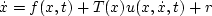
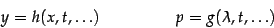
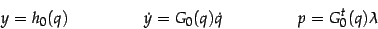
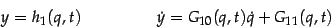
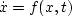
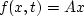
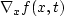
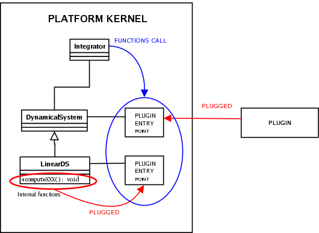

Kernel Components > Plug-in system
Release Information
| Project: | Siconos |
|---|---|
| Internal Release Number: | 1.0 |
| Last update: | September 15, 2005 |
| Related Documents: |
Plug-in system component
| What for? | To provide a user plug-in system for specific functions |
|---|---|
| Feature sets: | F-2.005 and F-2.200 |
| Sources directory name: | Kernel/src/utils/SiconosSharedLibrary, Kernel/src/plugin |
The purpose of Plug-in system is to allow user to provide his own computation methods for some specific functions (vector field of a dynamical system, mass ...), this
without having to re-compile the whole platform.
Plug-in is a set of functions, compiled with a C++ compiler (but with extern
"C" before the header of the function, for names
compatibility). It must be supplied as a
dynamical library, to allow the platform to load it and use its
functions. Thus, parameters and returned values of function of plugins
must be C
types (no C++ objects or STL containers).
For Integrators using a FORTRAN routine with a plugin
function as a parameter, a specific class method is used. It convert C
to FORTRAN and conversely (g2f.h features).
- Kernel/src/plugin/DefaultPlugin.c: default external
functions.
- Examples/UserExample/UserPlugin.c : user-defined
file. Where user implements its own functions, respecting the
required signature (see list below).
- Kernel/src/utils/SiconosSharedLibrary: toolbox for plug-in
handling.
In a specific class, plug-in mechanism is implemented with:
- a private pointer to member function, that will point to user-defined function, implemented in its UserPlugin.c file
- a public method that calls member function, and that will be used
during computation
Let us consider LagrangianDS class. For user, it is possible to specify its own function definition for mass operator. This function is then implemented in
UserPlugin.c .
LagrangianDS class has a private member defined as follows:
void (*computeMassPtr)(unsigned int* sizeOfq, const double* time,double* qPtr, double* massPtr, double* param);and a public method:
void computeMass(const double &, SimpleVector *);During computation, when mass is required, one will use computeMass, which calls computeMassPtr which is linked to user external plug-in.
For a complete example, see BouncingBall Template and its BallPlugin.c file.
To find more details on files and objects described above, see Doxygen documentation of Siconos/Kernel.
User-defined parameters:
In almost all the plug-in, a variable "param" is present. This is a user-defined list of parameters.
Inside the class that owns the plug-in, this variable is a stl vector<SimpleVector*>, each component is set by default to a 1-dimension SimpleVector v, with v(0)=0.
The stl vector contains as many SimpleVectors as there are plug-in in the class.
Functions setParametersListVector, setParametersList and setParametersListPtr are available (see Doxygen for details) to set values for this variable.
For user, the way to use these parameters is:
- define a SimpleVector* (to set values for one plug-in) or a vector<SimpleVector*> (to set parameters for all the plug-in of the concerned object)
with the required parameters values.
- call setParametersList(Ptr) or setParametersListVector, function of the corresponding object (dynamical system for example)
- call function to set plug-in .
Example:
To set FExt function in a Lagrangian Dynamical System named lds:
LagrangianDS lds = new LagrangianDS( ... ) ;Then, in nameOfPlugin.cpp, in definition of function nameOfFext, param is available as an in-out parameter.
SimpleVector* parameters = new SimpleVector(2);
// ... set values for parameters
lds->setParametersList(parameter,2) // 3rd plug-in corresponds to FExt
lds->setComputeFExtFunction("nameOfPlugin.so", "nameOfFExt");
Plug-in list
Here is the list of available plug-in with their complete signature and
the classes they belong to. - dynamical systems plug-in
DynamicalSystem class: 
- f(x,t):
void (*vectorFieldPtr) (unsigned int* sizeOfX, const double* time, const double* x, double* xdot, double* param);
and its jacobian:
void (*computeJacobianXPtr) (unsigned int* sizeOfX, const double* time,
const double* x, double* jacobianXPtr, double* param); - u(x,dx/dt,t):
void (*computeUPtr) (unsigned int* sizeOfU, unsigned int* sizeOfX,
const double* time, double* x, double* xDot, double* U, double* param); - T(x):
void (*computeTPtr) (unsigned int* sizeOfU, unsigned int* sizeOfX, const double* x, double* T, double* param);
- A(x,t):
void (*computeAPtr)(unsigned int* sizeOfA, double* APtr, const double* time);
- b(t):
void (*computeBPtr)(unsigned int* sizeOfB, double* bPtr, const double* time);
- M(x,t):
void (*computeMassPtr)(unsigned int* sizeOfq, const double* time, const double* q, double* mass, double* param);
- NNL(q,dq/dt):
void (*computeNNLPtr)(unsigned int* sizeOfq, const double* q,
and its jacobian compare to q and dq/dt:
const double* velocity, double* NNL, double* param);void (*computeJacobianQNNLPtr)(unsigned int* sizeOfq, const double* q,
const double* velocity, double* jacob, double* param);
void (*computeJacobianVelocityNNLPtr)(unsigned int* sizeOfq, const double* q,
const double* velocity, double* jacob, double* param); - FInt(q,dq/dt,t):
void (*computeFIntPtr)(unsigned int* sizeOfq, const double* time, const double* q,
and its jacobian compare to q and dq/dt:
const double* velocity, double* fInt, double* param);void (*computeJacobianQFIntPtr)(unsigned int* sizeOfq, const double* time,
const double* q, const double* velocity, double* jacob, double* param);
void (*computeJacobianVelocityFIntPtr)(unsigned int* sizeOfq, const double* time,
const double* q, const double* velocity, double* jacob, double* param); - FExt(q,dq/dt,t):
void (*computeFExtPtr)(unsigned int* sizeOfq, const double* time,
double* fExt, double* param);
- f(x,t):
- Relations plug-in
Relation class :
- h(x,t,u):
(u: control term)
void (*computeOutputPtr)(const unsigned int* sizeOfX, const double* x, const double* time,
const unsigned int* sizeOfY, const double* lambda, const unsigned int* sizeOfU, const double* u,
double* y, double* param); - r(x,lambda,t):
void (*computeInputPtr)(const unsigned int* sizeOfY, const double* lambda, const double* time,
double* r, double* param);
Three cases are available at the time, scleronomic, rhenomorous and scleronomic+lambda.
- "scleronomic":

void (*h0Ptr)(const unsigned int* sizeOfQ, const double* q, const unsigned int* sizeOfY,
and
double* y, double* param);
void (*G0Ptr)(const unsigned int* sizeOfQ, const double* q, const unsigned int* sizeOfY,
double* G0, double* param); - "rhenomorous":

void (*h1Ptr)(const unsigned int* sizeOfQ, const double* q, const double time,
and
const unsigned int* sizeOfY, double* y, double* param);
void (*G10Ptr)(const unsigned int* sizeOfQ, const double* q, const double time,
const unsigned int* sizeOfY, double* y, double* param);
void (*G11Ptr)(const unsigned int* sizeOfQ, const double* q, const double time,
const unsigned int* sizeOfY, double* y, double* param); - "scleronomic+lambda":

void (*h2Ptr)(const unsigned int* sizeOfQ, const double* q, const double * lambda,
and
const unsigned int* sizeOfY, double* y, double* param);
void (*G20Ptr)(const unsigned int* sizeOfQ, const double* q, const double * lambda,
const unsigned int* sizeOfY, double* y, double* param);
void (*G21Ptr)(const unsigned int* sizeOfQ, const double* q, const double * lambda,
const unsigned int* sizeOfY, double* y, double* param);
- h(x,t,u):
(u: control term)
"False Plug-in"
False plugin system allows an integrator dedicated to a dynamical systems class to integrate its derivated classes too.
Example :
Let us consider the DynamicalSystem class, ie systems represented by  , and one of its derived class, LinearDS, where .
f is a plugin function and is plugged to vectorField
function pointer to the platform. 
is a plugin function and is plugged
to computeJacobianX function pointer to the platform.
Functions f and are in this case very simple and directly supplied by internal methods of LinearDS class. These methods are plugged to the platform during the initialisation phase instead of plugin functions. During computation, integrator I dedicated to DynamicalSystem class calls f et functions. It can therefore integrate a LinearDS object since required functions are supplied by the class and respect plugin functions signatures.

In a general manner, any class
derivated from another
which
uses plugin system must use plugin functions too, or supply internal
functions which can be plugged instead.